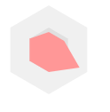

本文主要使用坐标轴的使用来绘制多边形，点位则都是在y轴上寻找，这种方法能够更好的理解图形与修改。
//id为html里canvas标签的属性id；
//x，y为坐标轴的起始位置，因为canvas默认坐标轴在左上角
//color为填充图形颜色
//...side为边，如果有5个参数则绘制出来的为五边形，6个就是六边形
var draw = function(id, x, y, color, ...side){
var c = document.getElementById(id);
var ctx = c.getContext("2d");
//移动起始坐标轴
ctx.translate(x,y);
ctx.fillStyle = color;
//坐标轴旋转的角度
var angle = 360/(side.length);
ctx.beginPath();
//第一个点位
ctx.moveTo(0,-side[0])
for(let i=1; i<side.length; i++){
//旋转坐标轴
ctx.rotate(angle*Math.PI/180);
ctx.lineTo(0,-side[i]);
}
//填充
ctx.fill();
ctx.closePath();
}
draw('mycanvas',50,50,'#F0F0F0',50,50,50,50,50,50);
draw('mycanvas',0,0,'#E0E0E0',25,25,25,25,25,25);
draw('mycanvas',0,0,'#FF9797',25,25,20,20,40,25);这张图片是代码执行后的结果
